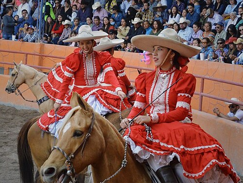
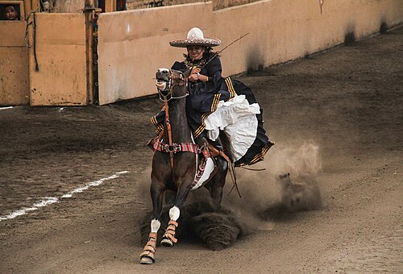
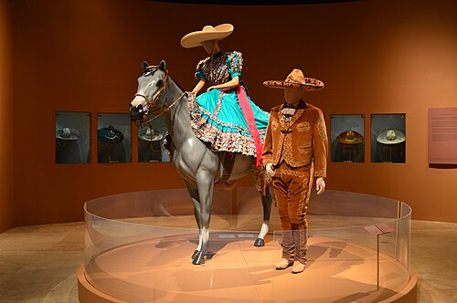
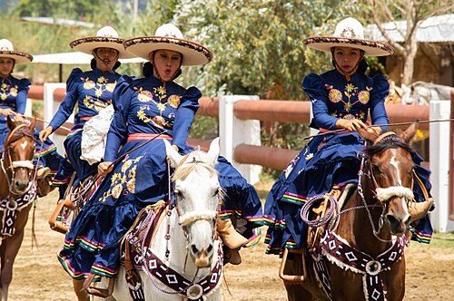

Escaramuza: Women, Horses, and Tradition in Mexico's Arena
Escaramuza is a dazzling display of horsemanship, tradition, and teamwork. Eight women, dressed in vibrant Adelita dresses and wide-brimmed sombreros, ride sidesaddle in tightly choreographed routines set to music. The sport, rooted in the Mexican charrería, is both a celebration of heritage and a test of skill, precision, and courage.
Each performance is a blend of speed, grace, and daring, as riders execute intricate patterns, crossing paths at full gallop and forming geometric shapes in the arena. The routines are judged on timing, synchronization, and the difficulty of maneuvers, with points deducted for errors or lack of unity.
Origins and Formalisation
The word Escaramuza translates roughly to “skirmish” or “maneuver,” referring to fast, coordinated movement rather than combat itself — a definition that aligns with the discipline’s emphasis on speed, precision, and formation.
Escaramuza developed as the female counterpart to Charrería, Mexico’s national equestrian discipline. Its imagery and dress reference the Soldaderas — women who supported and fought alongside revolutionary forces during the Mexican Revolution (1910–1920). These women rode horses for transport, logistics, and military movement, often riding sidesaddle due to clothing and social conventions of the period.
Escaramuza itself did not exist as a formal sport during the revolution. It emerged in the 1950s, as charrería became increasingly organised and rule-based. Women’s riding exhibitions were formalised into an all-female team discipline, with eight riders performing choreographed routines at speed. Standardised movements, scoring criteria, and uniform requirements transformed informal displays into a regulated competitive event.

Escaramuza — At a Glance
- Discipline: All-female equestrian team riding discipline from Mexico
- Cultural Context: Part of charrería, Mexico’s national equestrian sport rooted in traditional ranch skills
- Team Format: Eight riders performing together in a single coordinated routine
- Riding Style: Ridden sidesaddle at canter and gallop
- Key Movements: Circles, crossings, direction changes, tight formations
- Judging: Precision, timing, formation, and collective control
- Scoring: Team-based only — no individual scores
More Than a Sport
Escaramuza is often described as elegant or folkloric, but those labels barely touch what it demands of the women who ride it. For them, Escaramuza is a discipline built on responsibility, precision, and collective commitment.
“Escaramuza gives us independence. It gives us confidence. It gives us tools we can use within our community.”
What happens in the arena reflects those values. Precision is non-negotiable. Teamwork is essential. Individual ability matters only insofar as it serves the group.

Riding as a Collective Act
Escaramuza demands absolute synchronisation. Eight riders move as a single unit, often at speed and often within inches of one another. Circles tighten, lines cross, directions reverse. One mistake ripples through the entire formation.
Horses are selected and trained with care. They must be calm, steady, and mentally resilient — capable of working sidesaddle amid music, movement, crowds, and swirling skirts. Training is deliberate and patient, grounded in trust rather than force.
Cleanliness — limpieza — matters. Straight lines matter. Transitions matter. What looks graceful to the audience is, in practice, control under pressure.

The Adelita Dress: Heritage Worn, Not Displayed
The Escaramuza uniform is not costume. Inspired by the Adelitas of the Mexican Revolution, it consists of a long, full skirt, fitted bodice, high neckline, and regional embroidery, all governed by regulation and tradition.
Riding sidesaddle at speed in this dress is technically demanding. Managing fabric while maintaining balance, posture, and rein control requires strength and experience. The beauty audiences see is earned through mastery, not decoration.

Family, Friendship, and Generational Bond
Throughout Escaramuza, the same themes surface repeatedly: family, friendship, and inheritance. Teams often become extended families. Young girls grow up around the arena, watching mothers, sisters, and aunts ride before taking their own place in formation.
One rider speaks of identity — not as something abstract, but as something practiced. Maintaining these traditions gives us identity. Escaramuza is passed down not through instruction alone, but through example.
For Mexican communities abroad, particularly in the United States, Escaramuza has taken on an additional role: preserving cultural continuity far from home.

Why Escaramuza Endures
Escaramuza survives because it teaches more than riding. It teaches cooperation, patience, and accountability. It demands responsibility — to the horse, to the team, and to the tradition itself. Strength here is quiet and earned through repetition, reliability, and consistency, not display.
Riders often speak about wanting young girls to see what is possible — to see that grace and seriousness, beauty and control, can exist together. What the audience sees is colour and motion. What lies beneath is structure, heritage, and commitment, renewed every time eight riders enter the arena together.
Escaramuza is inseparable from the history of women riding sidesaddle. To explore how side saddle developed, why it was used, and how it shaped women’s riding traditions across cultures, read our companion piece: The History and Evolution of the Side Saddle →
Related Stories

The Horses of the Camargue
Tough, white, and semi-feral, the Camargue horse is a living part of southern France's wetland culture. This article explores the breed's origins, traits, and working life with the Gardians.
.jpg)
The Side Saddle: An Evolution Shaped by Constraint, Craft, and Culture
The side saddle was not a decorative tradition but a technical response to social constraint. This article traces its evolution from medieval Europe to its peak in British hunting.
Escaramuza: Women, Horses, and Tradition in Mexico's Arena
Set to music and performed at full gallop, Escaramuza brings eight riders into the arena as a single unit. Riding sidesaddle, they move through crossing lines and sweeping turns with precision and control.